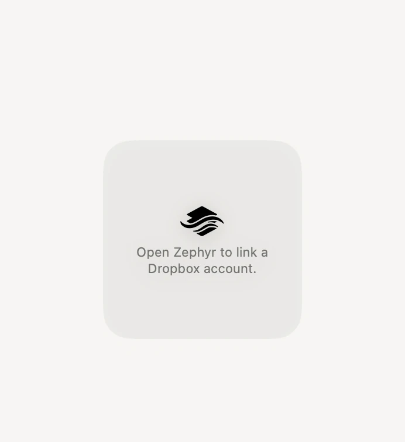

El widget Estado de la sincronización de Zephyr muestra el número de archivos de cada cuenta vinculada y todo lo que no se ha podido sincronizar, para que veas cómo están las cosas sin hacer clic en la barra de menús.

Haz clic en el escritorio mientras mantienes pulsada la tecla Control y elige Editar widgets.
Busca Zephyr en la lista de la izquierda.
Elige un tamaño y arrastra el widget hasta donde quieras colocarlo.
El tamaño pequeño muestra una cuenta. El mediano muestra varias.

El widget lee un resumen que Zephyr publica mientras sincroniza, así que no tiene nada que mostrar hasta que Zephyr se ha ejecutado al menos una vez con una cuenta vinculada. Abre Zephyr y el widget se rellena.

Nota: El widget sigue a Zephyr, no directamente a Dropbox. Mientras Zephyr no está en ejecución, los números se quedan fijos en lo último que publicó.